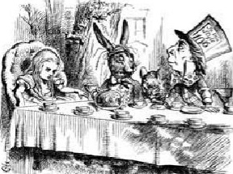

Алиса в стране чудес
Материал из Википедии — Свободной энциклопедии

Содержание
История создания
Первая публикация «Алисы» состоялась 4 июля 1865 года, ровно через три года после того, как
Его Преподобие Чарльз Лютвидж Доджсон и Его Преподобие Робинсон Дакворт на лодке
поднялись вверх по Темзе в обществе трёх девочек
Сюжет
Алиса бежит за Белым Кроликом и внезапно проваливается в глубокую кроличью нору, которая
выводит её в загадочную комнату с множеством закрытых дверей.
Персонажи
Ввиду разнообразности вариантов перевода каждого имени персонажа ниже представлена
таблица с указанием различных переводов
| Демурова | Оригинал | Набоков | Заходер | Щербаков | Яхнин |
|---|---|---|---|---|---|
| Алиса | Alise | Аня | Алиса | Алиса | Алиса |
| Болванщик | Hatter | Шляпник | Шляпа | Шляпочник | Котелок |
Критика
Большая часть критических отзывов на книгу положительны, хотя иногда критикуют (но чаще
хвалят) странный непредсказуемый сюжет.
Отзывы британских критиков
В Великобритании первые отзывы на книгу были весьма критичны: за редкими исключениями
рецензенты отказывались видеть хоть какой-то смысл в «блужданиях» Алисы. Отношение
критики изменилось лишь спустя несколько десятилетий.
Отзывы во всем мире
В 1931 «Алиса» попала в список запрещенных книг в китайской провинции Хунань, поскольку
«животные не должны говорить человеческим голосом» и «нельзя показывать животных и
людей равными»
Отзывы в Росcии
Отзыв из журнала «Женское образование»:
Есть книги, о которых и десяти слов сказать не хочется, до того они ниже всякой
критики. Лежащее перед нами издание принадлежит именно к их числу.
Бессодержательнее и нелепее этой сказки или, вернее, просто небывальщины (так
как в создании сказки предполагается участие фантазии) трудно себе что-нибудь
представить. Советуем всем матерям пройти мимо этого никуда не годного
измышления, не приостанавливаясь ни на минуту.